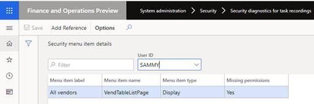

Security diagnostics for task recordings
Before you begin
This topic provides information about how to analyze and manage security permission requirements based on a task recording. Before you complete the steps in this topic, you must have a task recording of the business process that you want to analyze. To record a business process, see Task recorder resources (This is an external linThis link was changed due to HTMLfromRepoGenerator).
Manage security for a task recording
- Go to System administration > Security > Security diagnostic for task recording.
- Open the task recording from its location. Select Open from this PC or Open from Lifecycle Services, and then select Close.
- This will open the Security menu item details page that lists the security objects required for the process.
Note
The Action and Output menu items are not included in the list.
- In the User ID field, select a user. If the user does not have permissions for some menu items, the Missing permissions field will update to Yes.

Select Add Reference to see a list of the security objects, including roles, duties, and privileges that grant the missing permission.
Select a security object from the list:
- If Role is selected, select Add role to user. This will open the Assign users to roles page. For more information, see Assign users to security roles page.
- If Duty is selected, select Add duty to role, select the roles that the duty should be added to, and then select OK.
- If Privilege is selected, select Add privilege to duties, select the roles that the duty should be added to, and then select OK.